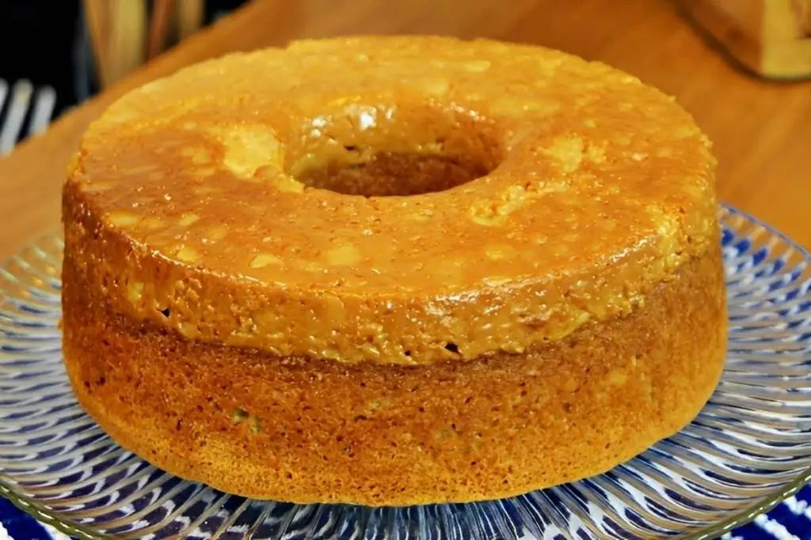

Ingredientes para a massa:
- 3 ovos,
- 2 colheres de manteiga,
- 1 xícara de açúcar,
- 1/2 xícara de leite,
- 2 xícaras de farinha,
- 1 colher (sopa) de canela em pó e 1 colher (sopa) de fermento.
Para o "fundo" (que será o topo):
- 2 latas de leite condensado (de boa qualidade)
- Margarina ou manteiga para untar muito bem a forma
Modo de preparo:
- Prepare a forma: Unte uma forma de furo central (23cm ou 24cm) com muita manteiga ou margarina. Não economize, pois isso evita que o doce de leite grude. Despeje as 2 latas de leite condensado no fundo da forma untada e reserve.
- Bata a massa: No liquidificador (ou batedeira), bata os ovos, o óleo, o leite e o açúcar até ficar homogêneo.
- Misture os secos: Transfira a mistura para uma tigela e adicione a farinha e a canela peneiradas. Misture delicadamente com um batedor de arame. Por último, adicione o fermento.
- Montagem: Despeje a massa cuidadosamente sobre o leite condensado. Tente espalhar devagar para não misturar as camadas (embora o leite condensado seja mais denso e tenda a ficar embaixo).
- Forno: Leve ao forno pré-aquecido a 180°C por cerca de 45 a 50 minutos. Faça o teste do palito na parte da massa.
- O Segredo do Desenforme: Deixe o bolo esfriar por uns 15 a 20 minutos, mas não deixe esfriar totalmente. O leite condensado (que virou doce de leite) precisa estar morno para soltar da forma com facilidade.